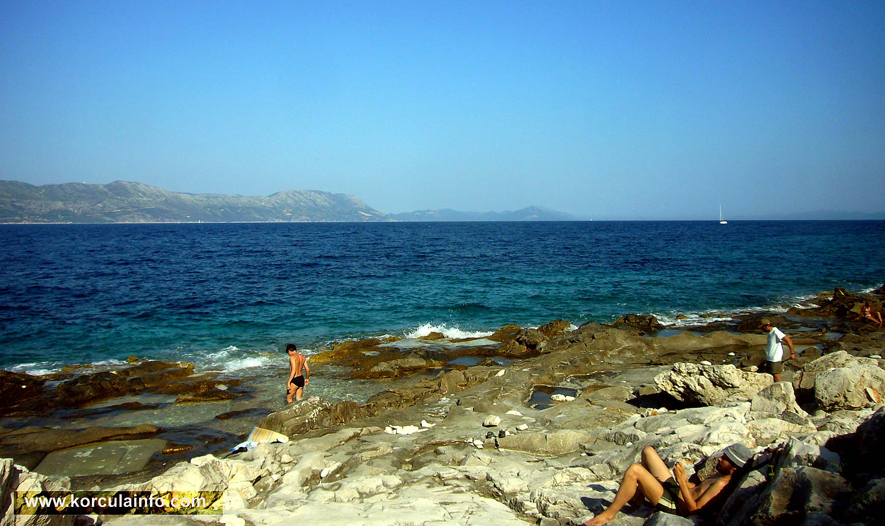

https://www.instagram.com//lumbardaH888/
lumbardaH888@gmail.com
+3788888888888888
Lumbarda is a small village and a municipality located on the Eastern tip of the Island of Korčula in Croatia, 7 kilometers away from the town of Korčula. A road passing through a picturesque area of pine woods and olive groves connects these two places. Lumbarda is surrounded by sandy vineyards (famous white wine "Grk" produced from the native grape of the same name) and sandy beaches such as Vela Pržina, Bilin Žal and Tatinja. Lumbarda is a tourist centre, many of its 1200 inhabitants are active in the local tourist service (private accommodation, tourist excursion to islands Mljet and Lastovo and around islands of Korčula archipelago, scuba diving exursions etc.) but they are also wine-growers, fishermen and stone-dressers. Lumbarda has a rich history preserved in written documents dating back to more than two thousand years ago.
Villa is located on Korcula Island in the small village Lumbarda. It has a spacious terrace with views of the Adriatic Sea and a private beach area.All modern apartments are air-conditioned and have a fully equipped kitchen or kitchenette with kitchenware, a refrigerator and a tea/coffee maker.
A seating area and satellite TV are provided as well.Guests of the Cvita can use the barbecue facilities in the garden and rent bicycles on site.The centre of Korcula is 4 km away.
Free private parking is available at the guest house. Guests can also use a shuttle bus service from Dubrovnik to Korčula, that will take them to their guest house on Korčula Island for an additional cost. An excellent choice for a big family (8-12 persons).
This property is 1 minute walk from the beach. Captain's Villa Sokol is a stone-made villa standing in a picturesque bay of Lumbarda, surrounded by pine-trees and situated just steps away from the sea.
Guests are welcome to sunbathe on the Villa's private jetty and can enjoy a number of exciting activities. Free parking and free WiFi are included.
The apartments are modern and spacious and feature terraces which overlook the sea. Guests are welcome to use the barbecue facilities located in the garden area or the outdoor whirlpool bath.
A rental car and your own speed boat are provided free of charge for the entire stay. An Excellent choice for a big company or big family (10-14 persons).
Vela Przina Beach is a lovely sandy beach, one of many picturesque beaches in Lumbarda, offering spectacular views across the sea all the way to Lastovo.
This is a very popular sandy beach, filled with tourists and locals. Gets very crowded in summer so if you like sandy beaches hurry up to take good spot as early as possible.
Located on the southern side of the island, so it faces open sea, though secluded within a large bay. There are two open-air cafes / restaurant right on the beach for simple foods and refreshments.
Lenga Beach can be found on the unspoiled north east coast of the Korcula Island, in near vicinity of Lumbarda.
The beach is made up of large white and golden rocks which are adjacent to the Raznjic, the eastern horn of the Island.
The beach also consist of large rock slabs that are very comfortable to sit or lay on for sunbathing. Getting into the water is easy here as there are several natural made steps / slides handy for getting in and out of the sea.
Lenga Beach is one of the less known swimming spots on the Island so is visited by (mostly) locals ‘in the know’.
+3788888888888888